New to tracker — actual advert age unknown
Prodej domu Varšavská, Ostrava - Zábřeh-Hulváky, Moravskoslezský kraj
Prodej domu Varšavská, Ostrava - Zábřeh-Hulváky, Moravskoslezský kraj
Not stated → 7,581,200 CZK
Original advert ↗Daily market update · 2026-11-06 · Ostrava + 15 km
Data limitation: Prices are advertised, not completed transaction prices. Disappeared adverts are NOT proof of sold or rented status. Search radius may be unverified for individual locations. "New" means first observed since a comparable complete Sreality scan, not independently verified as newly published. "New to tracker" may reflect expanded or partial portal coverage. Older Sreality IDs and known cross-lists are excluded. Additional monthly rental charges are not reliably supplied in these search cards.
Prodej domu Varšavská, Ostrava - Zábřeh-Hulváky, Moravskoslezský kraj
Not stated → 7,581,200 CZK
Original advert ↗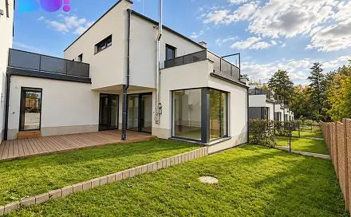
Zlevněno prodej domu 200 m² s pozemkem 296 m² Ostrava 13 400 000 Kč
13,800,000 CZK → 13,400,000 CZK -2.9%
Original advert ↗Prodej domu/vily, 200 m²
13,800,000 CZK → 13,400,000 CZK -2.9%
Original advert ↗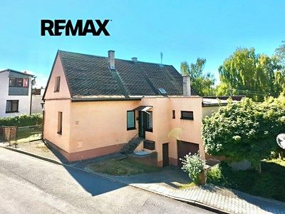
Brušperk, Frýdek-Místek
2,700,000 CZK → Not stated
Original advert ↗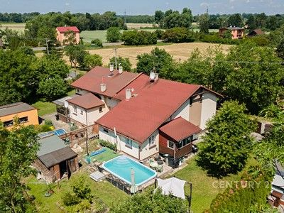
Pudlov, Karviná
3,980,000 CZK → 3,775,000 CZK -5.15%
Original advert ↗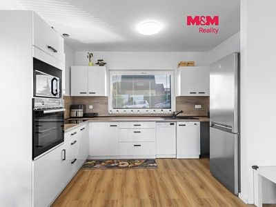
Horní Lhota, Ostrava-město
11,490,000 CZK → Not stated
Original advert ↗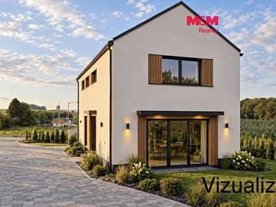
Skalice, Frýdek-Místek
Not stated → 8,999,000 CZK
Original advert ↗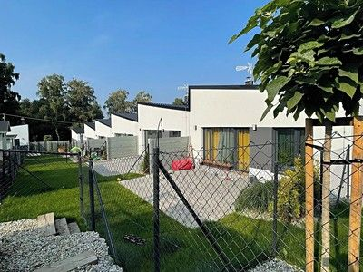
Petřvald, Karviná
Not stated → 6,290,000 CZK
Original advert ↗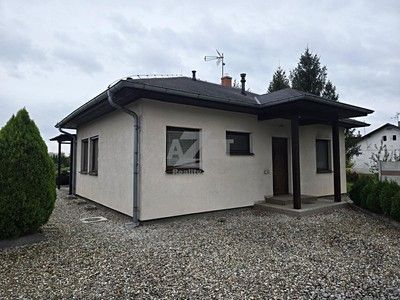
Staré Město, Karviná
7,700,000 CZK → 7,490,000 CZK -2.73%
Original advert ↗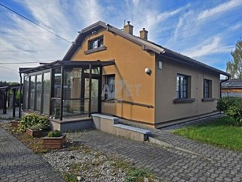
Prostřední Suchá, Karviná
7,950,000 CZK → 7,500,000 CZK -5.66%
Original advert ↗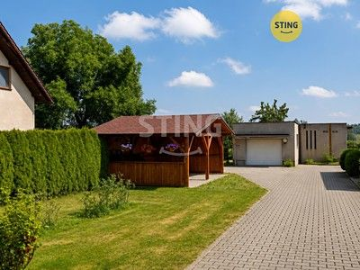
Krmelín, Frýdek-Místek
Not stated → 8,990,000 CZK
Original advert ↗Těrlicko, Karviná
Not stated → 7,490,000 CZK
Original advert ↗
Skalice, Frýdek-Místek
9,250,000 CZK → Not stated
Original advert ↗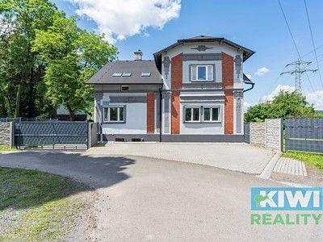
Muglinov, Ostrava-město
6,000,000 CZK → Not stated
Original advert ↗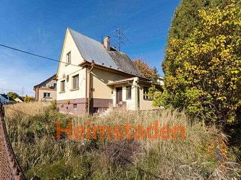
Stonava, Karviná
Not stated → 4,390,000 CZK
Original advert ↗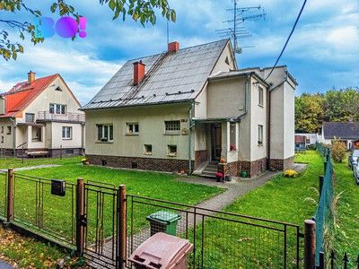
Prostřední Suchá, Karviná
Not stated → 5,900,000 CZK
Original advert ↗
Michálkovice, Ostrava-město
6,119,689 CZK → 6,119,689 CZK
Original advert ↗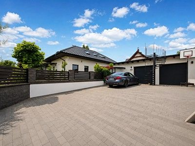
Místek, Frýdek-Místek
12,990,000 CZK → Not stated
Original advert ↗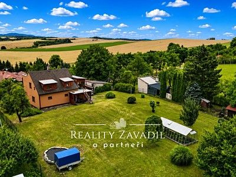
Fryčovice, Frýdek-Místek
9,900,000 CZK → 9,700,000 CZK -2.02%
Original advert ↗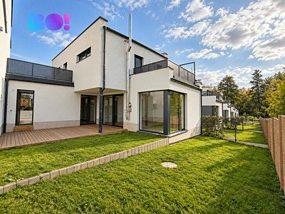
Muglinov, Ostrava-město
13,800,000 CZK → 13,400,000 CZK -2.9%
Original advert ↗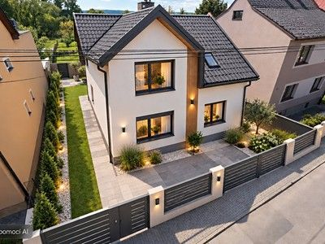
Kravaře, Opava
6,399,000 CZK → Not stated
Original advert ↗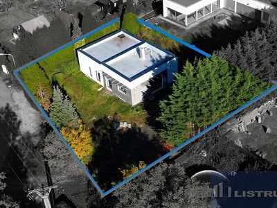
Prostřední Suchá, Karviná
Not stated → 7,990,000 CZK
Original advert ↗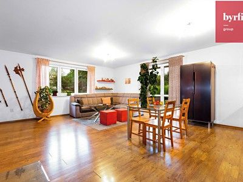
Vratimov, Ostrava-město
9,399,000 CZK → Not stated
Original advert ↗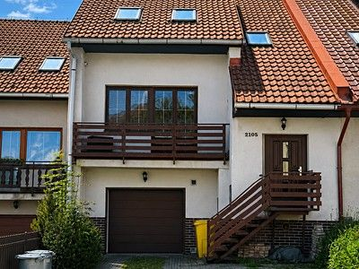
Místek, Frýdek-Místek
7,590,000 CZK → Not stated
Original advert ↗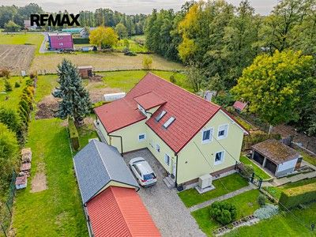
Dolní Lutyně, Karviná
Not stated → 7,499,000 CZK
Original advert ↗Petřvald, Karviná
6,290,000 CZK → Not stated
Original advert ↗
Petřvald, Karviná
7,490,000 CZK → Not stated
Original advert ↗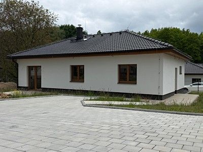
Hrabová, Ostrava-město
Not stated → 8,790,000 CZK
Original advert ↗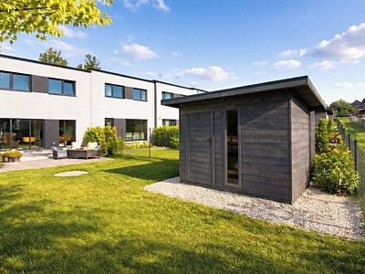
Těrlicko, Karviná
7,490,000 CZK → Not stated
Original advert ↗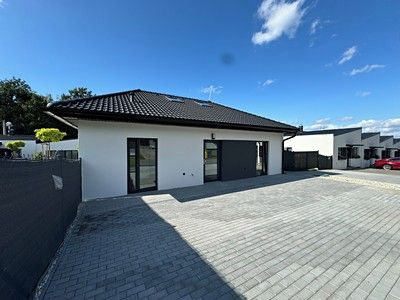
Petřvald, Karviná
Not stated → 7,490,000 CZK
Original advert ↗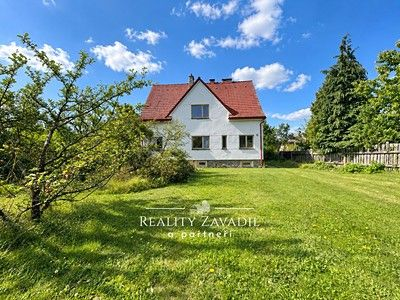
Bítov, Nový Jičín
6,490,000 CZK → 6,250,000 CZK -3.7%
Original advert ↗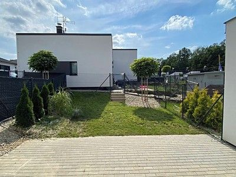
Petřvald, Karviná
Not stated → 4,649,000 CZK
Original advert ↗Petřvald, Karviná
4,649,000 CZK → Not stated
Original advert ↗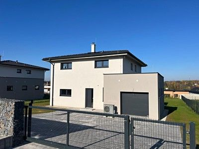
Polanka nad Odrou, Ostrava-město
Not stated → 13,990,000 CZK
Original advert ↗
Borová, Opava
13,990,000 CZK → 13,490,000 CZK -3.57%
Original advert ↗